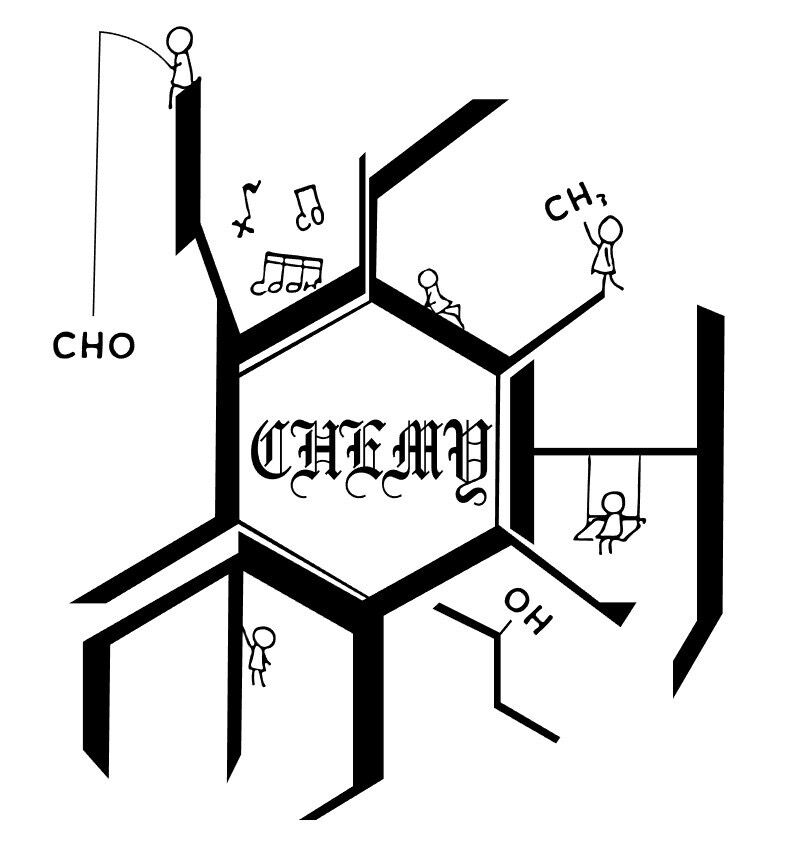

写在前面
这个网站，起于备赛时的一个小小愿望。
Chemy 的题目逐年积累，许多题目设计精巧，既值得细细推敲，也有扎实的训练价值。然而，竞赛生的时间终究有限，能专门拿出三个小时、从头到尾完成的套卷，只能是其中一部分。我常想，能不能把这些好题按专题整理起来，让大家循着自己的薄弱之处，找到最需要的练习？
那时，我就曾尝试整理这样的专题卷：晶体掌握得不够扎实，就在一道道晶体题中厘清概念；结构推断尚不熟练，就沿着一条条线索磨炼思路。把散落在不同年份、不同试卷里的题目汇集起来，让更多好题有机会被认真做过，也让零散的解题经验，慢慢沉淀成自己的方法。
后来我发现，每年都有同学怀着同样的愿望。如今，借助Vibe Coding，当年的想法终于有了落地的机会，于是便有了这个网站。我想把整理好的专题题目开源分享出来，让大家少一些搜寻与翻找，多一些专注与思考。你可以在线读题，也可以单题下载，或从不同试卷中选出需要的题目，合成一份连续排版的 PDF，打印成自己的练习卷。愿这些练习能帮你补齐短板，也愿你在反复推敲之后，收获豁然开朗的欣喜，渐渐看见化学严密而又生动的美。
我是广东 2023 届的鹈鹕。曾经，我在一所竞赛资源有限的学校学习化学竞赛。Chemy 上一套又一套的题目，陪伴我从弱校走进省队、拿到金牌，也为我后来走进北京大学化学与分子工程学院打下了基础。感谢 Chemy 将这些题目公开分享，让当年的我，在学校所能提供的资源之外，仍有继续向前的可能。如今整理这些专题，也是想把曾经收到的帮助，再递到后来同学的手中。愿你从这里出发，走出属于自己的竞赛之路。
题库与使用
按目录找题。选择专题后，在“题目目录”中按届次、试卷展开，点击题目名称即可阅读。可以筛选某一届或某份试卷；知道专题题号时，在“输入专题题号”中输入数字，点击“跳转”。网页与 PDF 使用相同的专题编号，筛选后编号不变。
按关键词找题。点击顶部搜索框，输入知识点、题目名称或题干中的词语，如“电极电势”“EDTA”。多个关键词用空格分隔，可查找同时包含这些词的题目；也可以限定专题、届次和试卷，或勾选“同时搜索答案”。点击搜索结果阅读原题，看完后点击“返回搜索结果”继续查找。图片中的文字与结构式可能搜不到。
阅读题目与答案。每道题下方都有“查看参考答案”，点击即可展开答案与评分细则。题目标题下方标有原卷出处，方便回查。
下载单题或自选练习卷。点击“下载本题 PDF”可保存一道题。需要多道题时，打开“按题目 / 试卷选题”，按题号与名称勾选，也可整卷、整届勾选；选择“全部专题”后，可跨专题选题或一次勾选某一届全部试卷的题目。窗口可按题名或专题题号筛选，如“12、15-18”。选好后点击“下载选题 PDF”，再点击“生成并下载 PDF”。所选题目按专题与题号连续排版，保留编号与出处，只含题目，不附答案。
下载整个专题。点击“专题题目 PDF”或“专题答案 PDF”，分别保存完整的题目册与答案册。这两个按钮下载本专题全部题目或答案，不受当前届次、试卷筛选影响。题与题连续排版，页满后自然换页，方便打印练习与对照答案。

化学竞赛专题题库
正在加载题库，请稍候…
正在读取题目与编号…